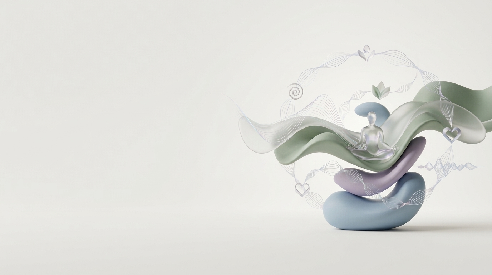

Дихальна вправа
4 хвРекомендовано для обраного стану
Автоматичний підбір вправ із візуальним анімованим індикатором фаз дихання (вдих/видих) та таймером для правильного дотримання ритму.
- Вдих4 сек
- Затримка2 сек
- Видих6 сек
Спокій розуму
Розкажіть, що відчуваєте, і отримайте швидку вправу для самопочуття: дихання або приємні звуки.
Почати
Персоналізовані рекомендації — підбір вправ відповідно до обраного емоційного стану.
Автоматичний підбір вправ із візуальним анімованим індикатором фаз дихання (вдих/видих) та таймером для правильного дотримання ритму.
Спокій розуму
Динамічні дихальні вправи та сеанси аудіо-релаксу.
Рекомендовано для обраного стану
Автоматичний підбір вправ із візуальним анімованим індикатором фаз дихання (вдих/видих) та таймером для правильного дотримання ритму.
Рекомендовано для обраного стану
Сеанси аудіо-релаксу зі зручним плеєром (керування відтворенням, пауза, гучність) для зняття емоційного напруження.
Спокій розуму
Мінімум кроків — отримання рекомендації за декілька натискань.
Мінімум кроків — отримання рекомендації за декілька натискань.
Можливість швидко скористатися вправою для покращення самопочуття.
Доступ до функцій без створення облікового запису.
Зрозуміла навігація та мінімум зайвих дій.
Підбір вправ відповідно до обраного емоційного стану.
Ми не караємо за пропущені дні та не надсилаємо настирливих сповіщень.
Спокій розуму
Коли охоплює тривога чи виснаження, найважче — знайти сили на довгі статті, реєстрації чи пошук відповідей. У такі моменти потрібна не теорія і не виснажливий аналіз, а миттєва підтримка.
Ми створили «Спокій розуму», щоб дати вам безпечний простір без тиску, оцінок і складних анкет. Ми не ставимо діагнозів і не замінюємо терапію — наша мета полягає у швидкій та доступній самодопомозі тут і зараз.
Все працює максимально просто: ви обираєте свій поточний стан за 1–2 тапи, а сервіс одразу пропонує коротку дихальну вправу чи аудіо-релаксацію. Нам можна довіряти, адже ми поважаємо вашу приватність: ваші дані залишаються тільки на вашому пристрої, а користування повністю анонімне. Ми не караємо за пропущені дні та не надсилаємо настирливих сповіщень. Це ваш особистий інструмент для відновлення сил — тоді, коли це справді необхідно.
Швидкий доступ до безкоштовних гарячих ліній допомоги України та посилання для звернення до фахівців.
Ми не ставимо діагнозів і не замінюємо терапію — наша мета полягає у швидкій та доступній самодопомозі тут і зараз.